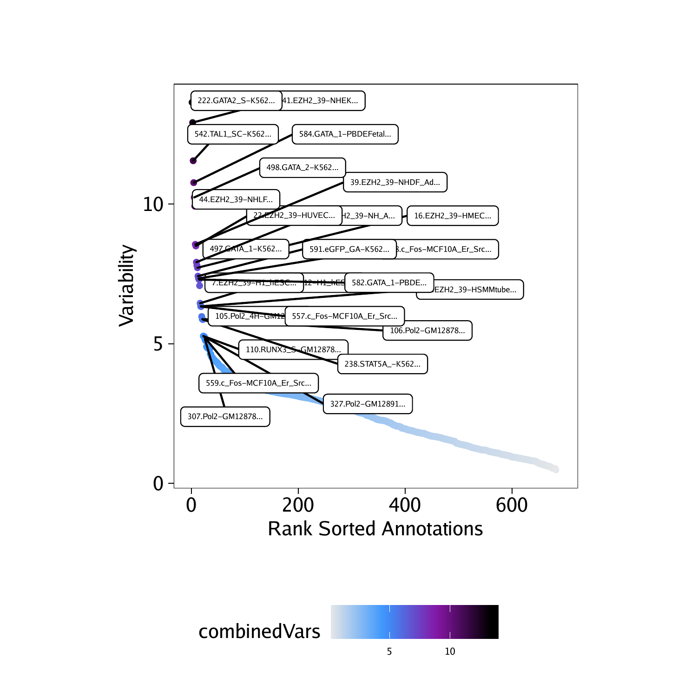
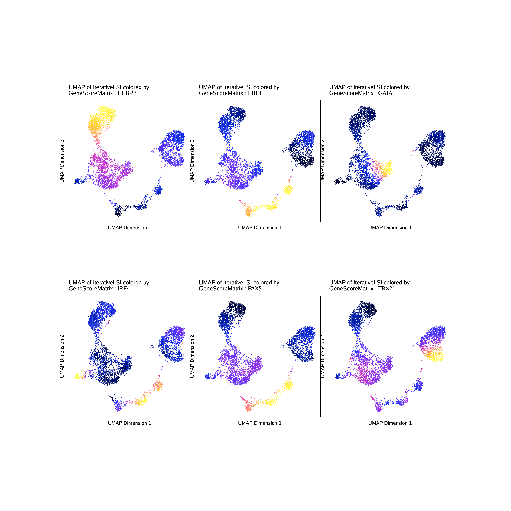
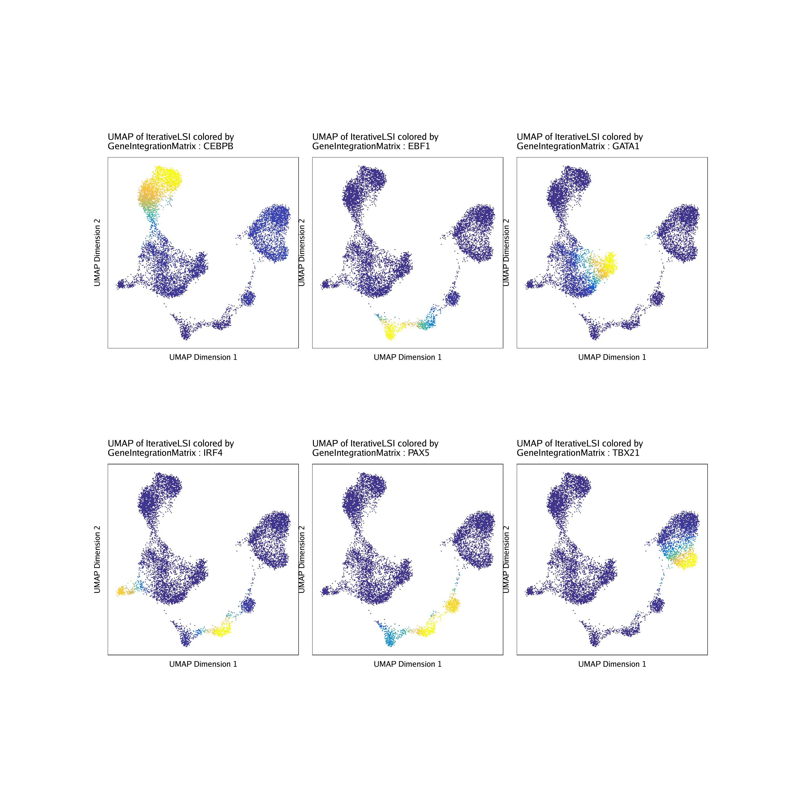
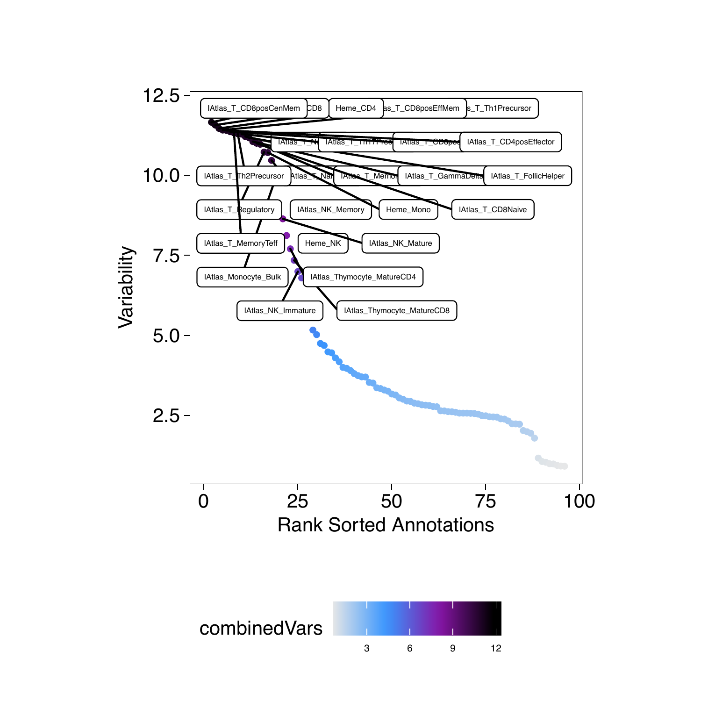
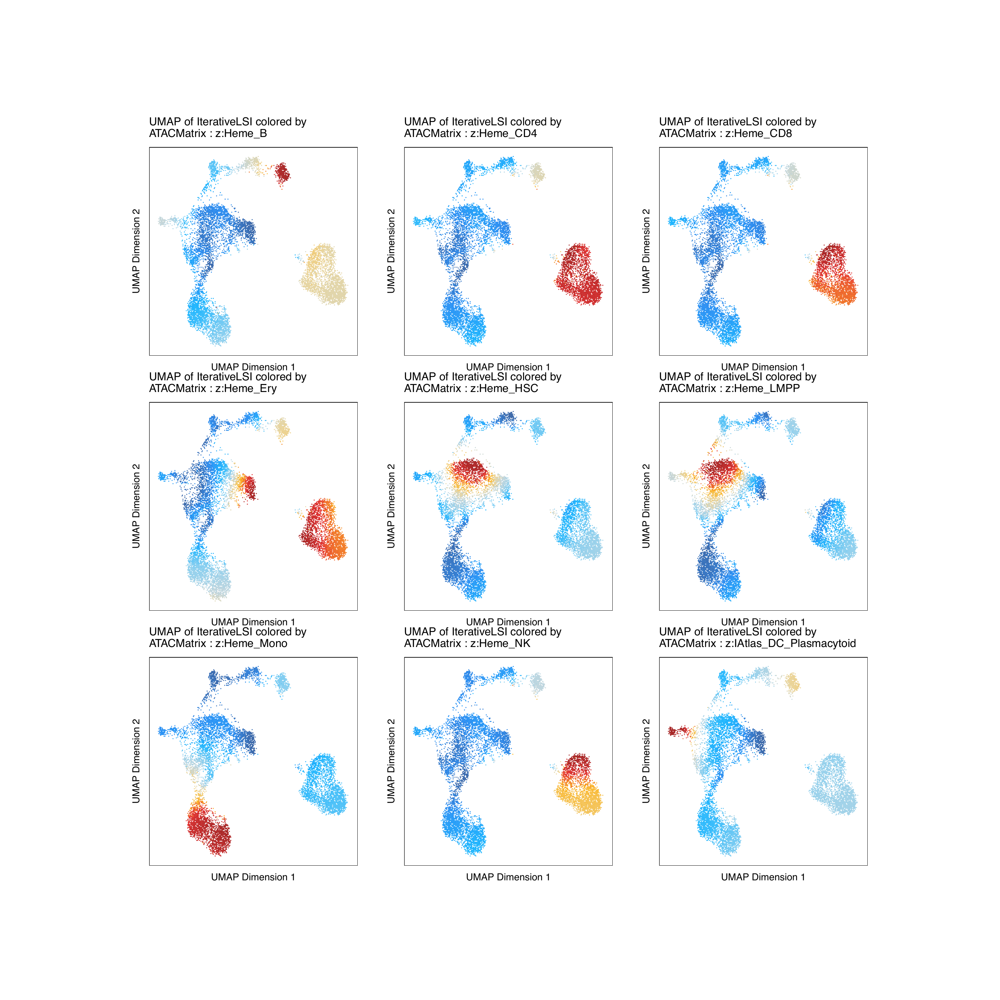

12.2 ArchR Deviations
12.2.1 Encode TFBS
If you have not added motif annotations
if("EncodeTFBS" %ni% names(projHeme5@peakAnnotation)){
projHeme5 <- addArchRAnnotations(ArchRProj = projHeme5, collection = "EncodeTFBS")
}Add ChromVAR Deviations for Motifs
projHeme5 <- addDeviationsMatrix(
ArchRProj = projHeme5,
peakAnnotation = "EncodeTFBS",
force = TRUE
)## Using Previous Background Peaks!
## ArchR logging to : ArchRLogs/ArchR-addDeviationsMatrix-10374737762a7-Date-2020-04-15_Time-10-59-20.log
## If there is an issue, please report to github with logFile!
## NULL
## 2020-04-15 10:59:26 : Batch Execution w/ safelapply!, 0 mins elapsed.
## ###########
## 2020-04-15 11:08:11 : Completed Computing Deviations!, 8.864 mins elapsed.
## ###########
## ArchR logging successful to : ArchRLogs/ArchR-addDeviationsMatrix-10374737762a7-Date-2020-04-15_Time-10-59-20.log
Plot Variable Motif Annotations
## DataFrame with 6 rows and 6 columns
## seqnames idx name combinedVars
##
## f222 z 222 222.GATA2_S-K562… 13.6382687713858
## f41 z 41 41.EZH2_39-NHEK… 12.9150554355261
## f542 z 542 542.TAL1_SC-K562… 11.5490744327685
## f584 z 584 584.GATA_1-PBDEFetal… 10.7653053700024
## f498 z 498 498.GATA_2-K562… 10.2384173319845
## f44 z 44 44.EZH2_39-NHLF… 9.92292044310219
## combinedMeans rank
##
## f222 -0.0312421757573656 1
## f41 0.113221166775704 2
## f542 -0.0155915927183644 3
## f584 -0.00997025022971285 4
## f498 -0.0317577572129743 5
## f44 0.0707460230932926 6
## Warning: Removed 7 rows containing missing values (geom_point).

We can then plot this as a nice PDF
plotPDF(plotVarDev, name = "Variable-EncodeTFBS-Deviation-Scores", width = 5, height = 5, ArchRProj = projHeme5, addDOC = FALSE)## [1] “plotting ggplot!”
## Warning: Removed 7 rows containing missing values (geom_point).
## Warning: Removed 7 rows containing missing values (geom_point).
## [1] 0
If we want to get TF feature names for downstream plotting
tfs <- c("GATA_1", "CEBPB", "EBF1", "IRF4", "TBX21", "PAX5")
getFeatures(projHeme5, select = paste(tfs, collapse="|"), useMatrix = "EncodeTFBSMatrix")## [1] “z:584.GATA_1-PBDEFetal…” “z:582.GATA_1-PBDE…”
## [3] “z:497.GATA_1-K562…” “z:477.CEBPB-K562…”
## [5] “z:462.CEBPB-IMR90…” “z:427.CEBPB-HepG2…”
## [7] “z:426.CEBPB-HepG2…” “z:379.CEBPB-HeLa_S3…”
## [9] “z:344.CEBPB-H1_hESC…” “z:293.EBF1_SC-GM12878…”
## [11] “z:278.CEBPB-A549…” “z:213.CEBPB_S-K562…”
## [13] “z:173.CEBPB_S-HepG2…” “z:130.PAX5_C2-GM12892…”
## [15] “z:123.PAX5_C2-GM12891…” “z:102.PAX5_N1-GM12878…”
## [17] “z:101.PAX5_C2-GM12878…” “z:93.IRF4_SC-GM12878…”
## [19] “z:87.EBF1_SC-GM12878…” “z:86.CEBPB_S-GM12878…”
## [21] “deviations:584.GATA_1-PBDEFetal…” “deviations:582.GATA_1-PBDE…”
## [23] “deviations:497.GATA_1-K562…” “deviations:477.CEBPB-K562…”
## [25] “deviations:462.CEBPB-IMR90…” “deviations:427.CEBPB-HepG2…”
## [27] “deviations:426.CEBPB-HepG2…” “deviations:379.CEBPB-HeLa_S3…”
## [29] “deviations:344.CEBPB-H1_hESC…” “deviations:293.EBF1_SC-GM12878…”
## [31] “deviations:278.CEBPB-A549…” “deviations:213.CEBPB_S-K562…”
## [33] “deviations:173.CEBPB_S-HepG2…” “deviations:130.PAX5_C2-GM12892…”
## [35] “deviations:123.PAX5_C2-GM12891…” “deviations:102.PAX5_N1-GM12878…”
## [37] “deviations:101.PAX5_C2-GM12878…” “deviations:93.IRF4_SC-GM12878…”
## [39] “deviations:87.EBF1_SC-GM12878…” “deviations:86.CEBPB_S-GM12878…”
To get deviation z-scores
markerTFs <- getFeatures(projHeme5, select = paste(tfs, collapse="|"), useMatrix = "EncodeTFBSMatrix")
markerTFs <- sort(grep("z:", markerTFs, value = TRUE))
TFnames <- stringr::str_split(stringr::str_split(markerTFs, pattern = "\\.", simplify=TRUE)[,2], pattern = "-", simplify = TRUE)[,1]
markerTFs <- markerTFs[!duplicated(TFnames)]
markerTFs## [1] “z:101.PAX5_C2-GM12878…” “z:102.PAX5_N1-GM12878…”
## [3] “z:173.CEBPB_S-HepG2…” “z:278.CEBPB-A549…”
## [5] “z:293.EBF1_SC-GM12878…” “z:497.GATA_1-K562…”
## [7] “z:93.IRF4_SC-GM12878…”
p <- plotEmbedding(
ArchRProj = projHeme5,
colorBy = "EncodeTFBSMatrix",
name = markerTFs,
embedding = "UMAP",
imputeWeights = getImputeWeights(projHeme5)
)## Getting ImputeWeights
## ArchR logging to : ArchRLogs/ArchR-plotEmbedding-103747b681a1c-Date-2020-04-15_Time-11-08-26.log
## If there is an issue, please report to github with logFile!
## Getting UMAP Embedding
## ColorBy = EncodeTFBSMatrix
## Getting Matrix Values…
## Getting Matrix Values…
##
## Imputing Matrix
## Using weights on disk
## Using weights on disk
## Plotting Embedding
## 1 2 3 4 5 6 7
## ArchR logging successful to : ArchRLogs/ArchR-plotEmbedding-103747b681a1c-Date-2020-04-15_Time-11-08-26.log
To plot all motifs we can use cowplot
#Rearrange for grid plotting
p2 <- lapply(p, function(x){
x + guides(color = FALSE, fill = FALSE) +
theme_ArchR(baseSize = 6.5) +
theme(plot.margin = unit(c(0, 0, 0, 0), "cm")) +
theme(
axis.text.x=element_blank(),
axis.ticks.x=element_blank(),
axis.text.y=element_blank(),
axis.ticks.y=element_blank()
)
})
do.call(cowplot::plot_grid, c(list(ncol = 3),p2))
We can also plot the gene expression profiles for each of these TFs
markerRNA <- getFeatures(projHeme5, select = paste(gsub("_","",tfs), collapse="|"), useMatrix = "GeneScoreMatrix")
markerRNA <- markerRNA[markerRNA %ni% c("SREBF1")]
markerRNA## [1] “TBX21” “CEBPB” “EBF1” “IRF4” “PAX5” “GATA1”
p <- plotEmbedding(
ArchRProj = projHeme5,
colorBy = "GeneScoreMatrix",
name = sort(markerRNA),
embedding = "UMAP",
imputeWeights = getImputeWeights(projHeme5)
)## Getting ImputeWeights
## ArchR logging to : ArchRLogs/ArchR-plotEmbedding-103747bae5e9f-Date-2020-04-15_Time-11-08-53.log
## If there is an issue, please report to github with logFile!
## Getting UMAP Embedding
## ColorBy = GeneScoreMatrix
## Getting Matrix Values…
## Getting Matrix Values…
##
## Imputing Matrix
## Using weights on disk
## Using weights on disk
## Plotting Embedding
## 1 2 3 4 5 6
## ArchR logging successful to : ArchRLogs/ArchR-plotEmbedding-103747bae5e9f-Date-2020-04-15_Time-11-08-53.log
#Rearrange for grid plotting
p2 <- lapply(p, function(x){
x + guides(color = FALSE, fill = FALSE) +
theme_ArchR(baseSize = 6.5) +
theme(plot.margin = unit(c(0, 0, 0, 0), "cm")) +
theme(
axis.text.x=element_blank(),
axis.ticks.x=element_blank(),
axis.text.y=element_blank(),
axis.ticks.y=element_blank()
)
})
do.call(cowplot::plot_grid, c(list(ncol = 3),p2))
We can also plot the gene expression profiles for each of these TFs
markerRNA <- getFeatures(projHeme5, select = paste(gsub("_","",tfs), collapse="|"), useMatrix = "GeneIntegrationMatrix")
markerRNA <- markerRNA[markerRNA %ni% c("SREBF1","CEBPA-DT")]
markerRNA## [1] “TBX21” “CEBPB” “EBF1” “IRF4” “PAX5” “GATA1”
p <- plotEmbedding(
ArchRProj = projHeme5,
colorBy = "GeneIntegrationMatrix",
name = sort(markerRNA),
embedding = "UMAP",
continuousSet = "blueYellow",
imputeWeights = getImputeWeights(projHeme5)
)## Getting ImputeWeights
## ArchR logging to : ArchRLogs/ArchR-plotEmbedding-103746f7eeb66-Date-2020-04-15_Time-11-09-21.log
## If there is an issue, please report to github with logFile!
## Getting UMAP Embedding
## ColorBy = GeneIntegrationMatrix
## Getting Matrix Values…
## Getting Matrix Values…
##
## Imputing Matrix
## Using weights on disk
## Using weights on disk
## Plotting Embedding
## 1 2 3 4 5 6
## ArchR logging successful to : ArchRLogs/ArchR-plotEmbedding-103746f7eeb66-Date-2020-04-15_Time-11-09-21.log
#Rearrange for grid plotting
p2 <- lapply(p, function(x){
x + guides(color = FALSE, fill = FALSE) +
theme_ArchR(baseSize = 6.5) +
theme(plot.margin = unit(c(0, 0, 0, 0), "cm")) +
theme(
axis.text.x=element_blank(),
axis.ticks.x=element_blank(),
axis.text.y=element_blank(),
axis.ticks.y=element_blank()
)
})
do.call(cowplot::plot_grid, c(list(ncol = 3),p2))
12.2.2 Bulk ATAC-seq
If you have not added motif annotations
if("ATAC" %ni% names(projHeme5@peakAnnotation)){
projHeme5 <- addArchRAnnotations(ArchRProj = projHeme5, collection = "ATAC")
}Add ChromVAR Deviations for Motifs
## Using Previous Background Peaks!
## ArchR logging to : ArchRLogs/ArchR-addDeviationsMatrix-103743481be2a-Date-2020-04-15_Time-11-09-46.log
## If there is an issue, please report to github with logFile!
## NULL
## 2020-04-15 11:09:52 : Batch Execution w/ safelapply!, 0 mins elapsed.
## ###########
## 2020-04-15 11:13:09 : Completed Computing Deviations!, 3.376 mins elapsed.
## ###########
## ArchR logging successful to : ArchRLogs/ArchR-addDeviationsMatrix-103743481be2a-Date-2020-04-15_Time-11-09-46.log
Plot Variable Motif Annotations
## DataFrame with 6 rows and 6 columns
## seqnames idx name combinedVars combinedMeans
##
## f22 z 22 IAtlas_T_CD8posCenMem 12.8413703976471 -0.0972946574781075
## f86 z 86 Heme_CD8 12.5070480860108 -0.079462324469343
## f85 z 85 Heme_CD4 12.2753260246254 -0.0561621531675016
## f23 z 23 IAtlas_T_CD8posEffMem 12.2250185804317 -0.104389732164243
## f21 z 21 IAtlas_T_CD8pos 12.1998071900673 -0.09178088897301
## f33 z 33 IAtlas_T_Th1Precursor 12.1352640996498 -0.0819315630754632
## rank
##
## f22 1
## f86 2
## f85 3
## f23 4
## f21 5
## f33 6

We can then plot this as a nice PDF
plotPDF(plotVarDev, name = "Variable-ATAC-Deviation-Scores", width = 5, height = 5, ArchRProj = projHeme5, addDOC = FALSE)## [1] “plotting ggplot!”
## [1] 0
If we want to get TF feature names for downstream plotting
ATACPeaks <- c("Heme_HSC", "Heme_LMPP", "Heme_Ery", "Heme_Mono", "Heme_CD4", "Heme_CD8", "Heme_B", "Heme_NK", "IAtlas_DC_Plasmacytoid")
getFeatures(projHeme5, select = paste(ATACPeaks, collapse="|"), useMatrix = "ATACMatrix")## [1] “z:Heme_NK” “z:Heme_Mono”
## [3] “z:Heme_LMPP” “z:Heme_HSC”
## [5] “z:Heme_Ery” “z:Heme_CD8”
## [7] “z:Heme_CD4” “z:Heme_B”
## [9] “z:IAtlas_DC_Plasmacytoid” “deviations:Heme_NK”
## [11] “deviations:Heme_Mono” “deviations:Heme_LMPP”
## [13] “deviations:Heme_HSC” “deviations:Heme_Ery”
## [15] “deviations:Heme_CD8” “deviations:Heme_CD4”
## [17] “deviations:Heme_B” “deviations:IAtlas_DC_Plasmacytoid”
To get deviation z-scores
markerATAC <- getFeatures(projHeme5, select = paste(ATACPeaks, collapse="|"), useMatrix = "ATACMatrix")
markerATAC <- sort(grep("z:", markerATAC, value = TRUE))
markerATAC## [1] “z:Heme_B” “z:Heme_CD4”
## [3] “z:Heme_CD8” “z:Heme_Ery”
## [5] “z:Heme_HSC” “z:Heme_LMPP”
## [7] “z:Heme_Mono” “z:Heme_NK”
## [9] “z:IAtlas_DC_Plasmacytoid”
p <- plotEmbedding(
ArchRProj = projHeme5,
colorBy = "ATACMatrix",
name = markerATAC,
embedding = "UMAP",
imputeWeights = getImputeWeights(projHeme5)
)## Getting ImputeWeights
## ArchR logging to : ArchRLogs/ArchR-plotEmbedding-1037416f3cb56-Date-2020-04-15_Time-11-13-23.log
## If there is an issue, please report to github with logFile!
## Getting UMAP Embedding
## ColorBy = ATACMatrix
## Getting Matrix Values…
## Getting Matrix Values…
##
## Imputing Matrix
## Using weights on disk
## Using weights on disk
## Plotting Embedding
## 1 2 3 4 5 6 7 8 9
## ArchR logging successful to : ArchRLogs/ArchR-plotEmbedding-1037416f3cb56-Date-2020-04-15_Time-11-13-23.log
To plot all motifs we can use cowplot
#Rearrange for grid plotting
p2 <- lapply(p, function(x){
x + guides(color = FALSE, fill = FALSE) +
theme_ArchR(baseSize = 6.5) +
theme(plot.margin = unit(c(0, 0, 0, 0), "cm")) +
theme(
axis.text.x=element_blank(),
axis.ticks.x=element_blank(),
axis.text.y=element_blank(),
axis.ticks.y=element_blank()
)
})
do.call(cowplot::plot_grid, c(list(ncol = 3),p2))